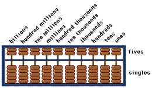

Por volta de 3000 a.C. surgiu o Ábaco, antes o homem contava os objetos de cinco em cinco ou de dez em dez. O ábaco era composto de uma armação com vários fios paralelos e contas ou arruelas deslizantes. Os fios correspondiam as posições dos dígitos em uma escala decimal e, as bolinhas denotavam os dígitos, que de acordo com a sua posição, representavam a quantidade a ser trabalhada.
A eficiência do ábaco acarretou a sua propagação por toda parte do mundo, em alguns países é usado até hoje. Segundo[TREMBLAY, Jean Paul & BUNT, Richard B.; 1983; 3], um operador de ábaco bem treinado pode somar muito mais rapidamente do que muitos operadores de calculadoras eletrônicas. O ábaco possui várias versões, em torno 2600 a.C. apareceu o ábaco chinês, que evoluiu rapidamente e foi chamado em sua forma final de Suan-Pan.

De modo semelhante apareceu no Japão o Soroban. A seguir, por volta de 1700 a.C., com as Tabuinhas de Argilas contendo cálculos matemáticos, onde os Babilônios trabalhavam com sistema sexagesimal, que deram origem as horas, minutos e segundos. Consta que, já em torno de 500 a.C. os Babilônios eram capazes de prever eclipses com exatidão.